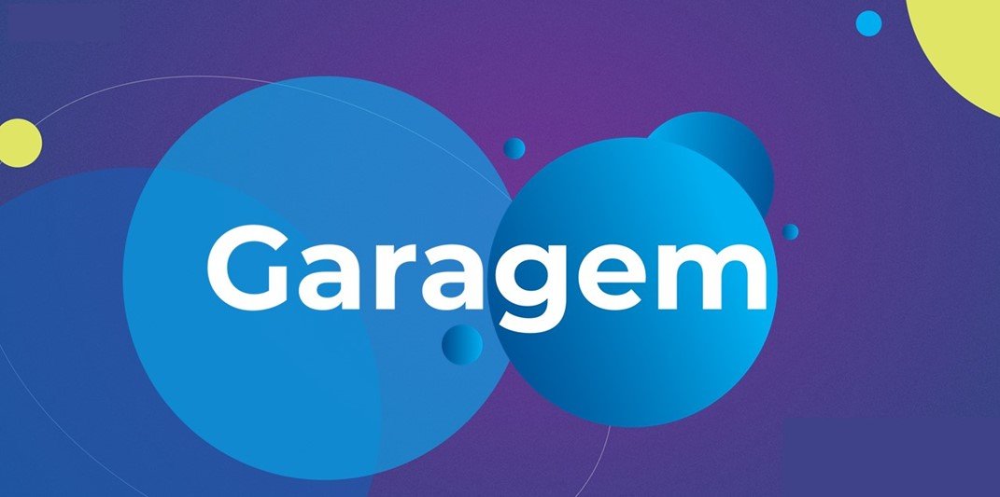
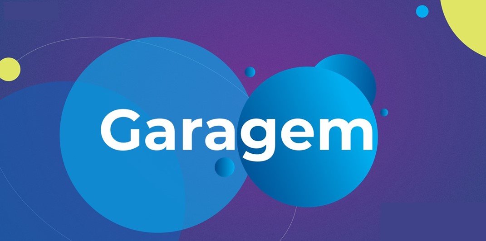

Inovação &
Produtos.
Soluções, Inovação, Códigos e apaixonada pelo que faz.


"A missão da minha vida é tornar o mundo mais aberto e conectado." — Mark Zuckerberg
Entre em contato
Sou movida por propósito e inovação. Ao longo da minha jornada, participei de projetos com foco em
impacto social, inclusão e tecnologia, sempre com muita dedicação e criatividade. Tive a
oportunidade de atuar na Cielo, colaborando em criações de projetos com tecnologias inovadoras, além
de participar de iniciativas voluntárias e desafios ligados à educação e sustentabilidade.
Gosto de entender problemas reais, escutar pessoas e construir soluções que façam sentido. Tenho um
olhar atento ao detalhe, sou proativa, comunicativa e apaixonada por transformar ideias em
experiências práticas.
Meu foco está cada vez mais voltado para a área de produtos, onde posso unir minha bagagem em
tecnologia à escuta ativa, estratégia e empatia. Quero seguir construindo soluções que façam a
diferença.
 FIGMA
FIGMA
 HTML5
HTML5
 CSS3
CSS3
 JAVASCRIPT
JAVASCRIPT
 GIT
GIT
 GITHUB
GITHUB

Fala Show é um jogo educativo para crianças com Apraxia da fala que utiliza Inteligência Artificial e Visão Computacional
 

Durante meu tempo na Cielo, colaborei em diversos projetos estratégicos com foco em inovação tecnológica no setor financeiro, incluindo:
Pagamento Biométrico
Apoiei o desenvolvimento de soluções de pagamento utilizando biometria, focando na segurança e experiência do usuário.
Open Finance & DRE
Colaborei com a implementação de soluções de Open Finance, apoiando a integração com o DREX para impulsionar a inovação no sistema financeiro.
Comércio Unificado & TAP
Contribuí para a criação de soluções que integraram diferentes canais de vendas e pagamentos, promovendo um comércio mais fluido e eficiente.
Extração e Análise de Dados
Atuei na extração de dados e apoio ao PO e aos desenvolvedores, ajudando na análise e melhor compreensão de informações críticas para os projetos.
Conexões com Startups
Participei de discussões e colaborações com startups para explorar novas oportunidades de inovação e crescimento no setor.


/MelPLens
/Mel Plens Angelis
melplan572@gmail.com